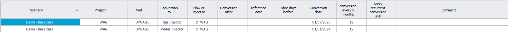

|
Frequently asked questions
You can also ask these questions to Precept AI ("Precept AI" on the main ribbon).
1. Scenario management
1.1 How do I create a new asset?
Click "Scenario Manager" on the main ribbon, then "Create new Asset". Type the name and click "Create Asset". Then create a project in it with "Create new Project".
At first only you (and a Super User) can work on the new asset. To let team members work on it, click "Security" on the main ribbon and add them (see Security / Access policy). A step-by-step example is in the tutorial.
1.2 I cannot see the asset my team members are working on.
You must be on the list of users of that asset. Ask the person who created the asset, or a Super User, to add you with "Security".
1.3 I cannot see the scenario a team member is working on.
The scenario is probably not shared. Only its creator (or a Super User) can change that: in the "Scenario Manager", select the scenario and click "Share scenario" ("Do not share scenario" makes it private again).
1.4 How do I create a new scenario?
Once the asset and the project exist, click "Scenario Manager", select the project, then either:
•"Create new scenario from scratch" — a new scenario from Precept's template, with its own forecast start and end dates; or
•"Import / Duplicate scenario" — a copy of an existing scenario (network, wells, potentials, opportunities, sequence, settings, material-balance and simulation inputs). "Duplicate scenario" on the main ribbon copies the scenario that is currently loaded.
2. Modelling oil and gas assets
2.1 Why do I need to give a "Project" name when I enter a shutdown?
•Organisation: each shutdown belongs to a project (for example maintenance or reservoir-management activities), and a whole project can be included in or excluded from the forecast in "Settings" ("To be included in Forecast").
•Shortfalls: the forecast computes the shortfalls (losses) per project, so in the results you can show, next to the actual production, the losses caused by each project.
2.2 Why do I need to give a "Project" name when I enter a new profile?
•Traceability: the project says why the profile exists (a drilling campaign such as Phase 1 or Phase 2, a stimulation campaign…).
•Results by project: the forecast can be shown per project, for example the base production of the existing wells plus the increments of Phase 1 drilling, Phase 2 drilling and the stimulation campaign.
2.3 How do I forecast a tie-back project connected to existing facilities?
1.In "Scenario Manager", click "Create new Asset" (if the asset does not exist yet), then "Create new Project".
2.Click "Create new scenario from scratch" and give the scenario a name and forecast start and end dates.
3.Click "Network" and model the existing facilities and the tie-back: nodes, pipes and the existing constraints ("Draw Network", see Network editor). Add the wells with "Add / Edit / Remove Wells".
4.In "Decline Curves", click "Import Historical Allocated Data" and load the history of the existing wells (per well, or as one aggregated profile).
5.Still in "Decline Curves", build the unconstrained potentials of the existing wells and of the new tie-back wells.
6.Create the opportunities (drilling, construction) and put them in a sequence ("Opportunities", "Sequence").
7.Click "Deterministic" and look at the results with "Charts".
2.4 I just created an opportunity but cannot see it in the sequence. Where is it?
A new opportunity goes to the Pool of Opportunities first. It is not in a sequence until you put it there. In the main window, tick "Show Pool of Opportunities", click "Refresh", then drag the opportunity onto a rig sequence (or right-click it to cut it and double-click in the sequence to paste it). See Build sequence of events.
2.5 How do I model a WAG well (alternating water and gas injection)?
1.Click "New profiles and Conversions" on the main ribbon and select "Conversions" in the list.
2.If the well is a water injector at the start of the forecast, click "Add" and enter the first conversion: the well, "Conversion to" Gas Injector, and the conversion date. Use "conversion every x months" to repeat it (for example every 12 months) and "Apply recurrent conversion until" to stop it.
3.Click "Add" again for the conversion back from Gas Injector to Water Injector, then "Save".
4.In "Decline Curves", give the well a potential for both the water-injection and the gas-injection periods.

See also Well conversion.
2.6 How do I model the extra production from a stimulation or a re-perforation?
1.Click "Opportunities", then "New".
2.Enter the "Opportunity:" name (for example "P-01 stimulation") and its "Duration (days):" (the well is shut in during the job).
3.Set "Impact on Forecast:" to "New profile". In the table: "Project" = any name used to group the results (for example "Stimulation campaign"); "Type profile" = "is positive incremental to"; "New profile name" = the name of the incremental profile (for example "P-01 stimulation gain"); "Incremental to or replace" = the stimulated well (P-01). Click "Save".
4.In "Decline Curves", build the potential of the incremental profile: it is listed under the name given in "New profile name".
5.Put the opportunity in a sequence (or give it a fixed start date).
The other impacts an opportunity can have are "Change constraint", "Shutdown", "Conversion" and "Rerouting" (and "None"). The same "is positive incremental to" profile models, for example, the support a new injector brings to a nearby producer. See Opportunities.
2.7 A work-over will abandon the current wellbore and drill a new one (sidetrack). How do I model it?
1.Add the new wellbore to the network (assuming it has its own name in the production allocation data): click "Network", then "Add / Edit / Remove Wells", and enter its name, type, the node it flows to, its reservoir and its project.
2.In "Decline Curves", define the potential of the new wellbore.
3.Create an opportunity for the work-over, with the drilling time as its duration. Give it two impacts: "New profile" for the new wellbore ("is a new online profile": it comes online once the work-over is done), and "Shutdown" for the original wellbore (shut in permanently, or for the period you choose).
4.Put the opportunity in the sequence. The old wellbore stops and the new one starts at the right time, as one work-over event.
3. Decline curves
3.1 How can I compare a well's potential with nearby wells?
Use the "Plot in background:" lists on the left of the Decline Curves window: select a project, a scenario and one or several wells. Their potentials are drawn behind the current well. Tick "Display Well name for wells in background" (in "Settings" of the chart) to label them.
3.2 I entered a nominal decline and a b factor. How do I see the effective decline?
Click "Settings" above the main chart and, under "Show / Hide parameters", tick "Decline rate (%)". The chart then shows the actual yearly decline.
3.3 Can Precept build the low and high cases of a well from its mid case?
Yes. Click "Settings" above the main chart and, in the "Auto-forecast" box, enter the ratios "Remaining Reserves 1P/2P" and "Remaining Reserves 3P/2P". Then click "Auto-forecast Low / High from Mid": Precept adjusts the nominal decline and b factor so the low and high cases honour those ratios. "Copy Mid case to Low and High cases" copies the mid case unchanged.
3.4 Can I remove outliers before running auto-forecast?
Yes. Click "Unselect" and draw a box around the points to leave out.
3.5 Can I use only part of the history for auto-forecast?
Yes. Click "Select" and draw a box around the points to use, then click "Auto-forecast".
3.6 Can I change the charts of the Decline Curves window?
Yes, the two charts on the right. Set the list at the top right of the chart to "Plot DCA", then pick the parameters to plot (oil, water, gas, water injection…) and the X axis: "Date", "Production time (years)", "Cum Liquid", "Cum Oil", "Cum Water", "Cum Gas", "Cum Oil N/Np", "Cum Water Injection" or "Cum Gas Injection".
3.7 The charts have too many curves. How do I make them easier to read?
Click "Settings" and untick parameters under "Show / Hide parameters" ("Liquid", "Oil", "Gas", "BHP", "THP", "Allocated production"…). For example, to focus on oil, untick "Liquid" and "Gas".
3.8 Can I compare my decline curves with reservoir-simulation profiles?
1.Duplicate the current scenario ("Duplicate scenario") and call the copy, for example, "Simulation results".
2.Load that scenario, open "Decline Curves" and click "Import / Duplicate profile".
3.Import the simulated profiles with "from Eclipse RSM file", or with "Import from Excel" if they are in a spreadsheet.
4.Back in your own scenario, select the "Simulation results" scenario and the well in "Plot in background:".
To run the simulator inside the forecast instead, see Simulator coupling.
4. Material balance and well models
4.1 How do I switch a scenario from decline curves to material balance?
Click "Settings" and, in the "Potentials" box, choose "Material Balance" instead of "Decline curves", then "Save Settings". Enter the reservoir data with "Material balance" on the main ribbon. The third choice, "Simulation", runs a reservoir simulator in the loop. See Material Balance and Settings.
4.2 How do I history-match a material-balance model?
1.Make the scenario's forecast start at the start of the field's production, so the run covers the whole history, and control the wells as they were operated (on rate or on BHP) with the initial constraints and constraints vs time.
2.Click "Probabilistic distributions" and enter a Min and a Max for the uncertain inputs: under "Material Balance" (OGIP or STOOIP, aquifer size and productivity index, rock compressibility…) and under "Well Inflow" (each well's PI, or its c and n).
3.Set "Number of runs:" in "Settings" (for example 20 to 50) and click "Probabilistic".
4.Click "Material Balance dashboard" in the "Forecast Results" group, choose Runs = Probabilistic, and open the runs table: the runs are ranked by match quality against the measured pressures and rates. Check the best run on the P/Z, Havlena-Odeh and Cole plots too.
5.Narrow the ranges and rerun if needed, then click "Use this run" to copy the matched reservoir parameters into the scenario and run "Deterministic".
Details: Material Balance, sections 9 and 10.
4.3 Which VLP correlation should I use for a gas well?
In Set Well Geometry, VLP tab, the "Correlation" list offers "Beggs & Brill" (the default), "Hagedorn-Brown" and "Gray". Use "Gray" for gas and gas-condensate producers: it is the correlation Precept uses for its gas wells. Then check the well against a recent well test ("VLP/IPR check at start forecast" in the Material Balance window) and, if needed, tune it with "F1 (tuning)" and "F2 (tuning)". For a gas producer the VLP table is built on gas rate, with THP, WGR and CGR as the sensitivity axes.
5. Running the forecast
5.1 After the run, all producers are shut in for "Process constrained". Why?
Usually the produced gas (or water) has nowhere to go. For example, if all the gas is re-injected but no gas injector is drilled yet, nothing can be produced until the first gas injector comes online. Add a way out for that fluid: a "Flare", "Fuel" or gas "Export" node in the network ("Draw Network").
5.2 Why is my well shut in?
Hover over the well's cell in the timeline of the main window: the status gives the reason (see Forecast results: Timeline). The common ones:
•"Well not drilled yet" — the opportunity that brings the well online has not been executed yet (or is still in the Pool, not in a sequence).
•"Process constrained" or "… choked-back to …" — a network constraint is reached and the objective function closes or chokes this well first (see 6.1). Tick "Show Network" to see which node is constrained in that month (see Network view).
•"Shutdown" or "Planned Shutdown" — a shutdown entered in "Shutdowns", or one linked to an opportunity, on the well or on a node downstream.
•"Well not economical" — the well is below a cut-off set in "Settings": "Close wells when water-cut greater than", "Close Oil wells when Oil rate is less than" or "Close Gas wells when Gas rate is less than".
•"Well dead" — the well has no potential left (its decline curve has ended, or, with material balance, the reservoir can no longer make it flow).
•"Shut-in due to not enough Drawdown", or choked back "due to Min FBHP reached" / "due to Max drawdown reached" — with material balance or simulation, the reservoir pressure is too low for the pressure limits of the well. Check the well with "VLP/IPR check at start forecast" in the Material Balance window.
"Warning" (main ribbon) lists the messages of the last run, and "Troubleshoot" shows the data the solver used.
5.3 Why does a "convergence report" window open at the end of my forecast?
The window "Network pressure solve - convergence report" appears only with material balance or simulation and a pipeline network. At each time step Precept repeats network solve and optimisation until the manifold pressures settle (within 0.5 in the asset's pressure unit, at most 15 passes). The report opens only when a time step did not settle, or needed 10 passes or more; a clean run opens nothing.
•"NOT converged - slow" — the pressure changes were still shrinking: the result is close, more passes would settle it.
•"NOT converged - oscillating" — the changes go up and down: a constraint or a marginal well is switching on and off. The "Largest change at" column names the node to look at.
•"Save as..." keeps the report as a text file. The same steps are listed in "Warning".
This report is about the network pressures, not the reservoir simulator. When "Simulation" is selected, the simulator coupling has its own messages (see Simulator coupling). Pipeline pressure drops are described in Network hydraulics.
6. Forecast results
6.1 How does Precept decide which wells to close or choke back when a constraint is reached?
It maximises the objective function set in "Settings" ("Objective Function" box), usually oil production plus water and gas injection, while honouring every constraint. In practice:
•when a water or liquid constraint is reached, the wells with the highest water-cut are cut first, because they give the least oil per barrel of water or liquid;
•when a gas or total-gas (gas + gas-lift) constraint is reached, the wells with the highest GOR are cut first.
In "Settings", producers, water injectors and gas injectors can each be set to "Optimize each well individually", "Equal choke opening within each reservoir" or "Equal choke opening across the whole asset".
6.2 How is the well count calculated?
In the Forecast Results window, at "Field" level, the parameters "O&G Prod count" (oil and gas producers), "WI count", "GI count", "Exploration count" and "Appraisal count" give the number of active wells at each time step. A well that is not drilled yet, dead, not economical or abandoned is not counted. A well shut in at that time step (for example for a planned shutdown) is still counted. The counts are given at field level only.
6.3 Can I see the field forecast split by project (existing wells, Phase 1 drilling, stimulation…)?
Yes. In the Forecast Results window, select "Project" in the left panel and pick the projects to show. With several projects, use a stacked chart ("Stacked Area" or "Stacked Bar"). Tick "Allocated Production" to add the history.
6.4 The forecast injects more than it produces (VRR > 1). Can Precept adjust injection to keep VRR = 1?
Yes. In "Settings", tick "Play with injection to keep VRR =1 per reservoir", "Save Settings", and run the forecast again: water and/or gas injection is adjusted to keep a VRR of 1 in each reservoir. With material balance, a VRR above 1 is physically meaningful (the reservoir pressure rises), see Material Balance.
6.5 The forecast gas injection is higher than the historical gas injection. Why?
Check the gas balance: gas injected = gas produced − fuel − flare (− export). If the network has no "Fuel" or "Flare" node, or their rates are too low, all the gas is re-injected. Add these nodes with the right rates or constraints.
7. Precept AI
7.1 How do I ask Precept AI a question or a change?
1.Click "Precept AI" on the main ribbon.
2.Type in the box at the bottom ("Ask a question, or tell me a change to make…") and press Enter (Alt+Enter starts a new line). You can also dictate with the microphone.
3.Ask how to do something ("how do I add a constraint vs time?"), ask about the results ("what is the oil plateau?"), or ask for a change ("use material balance for this scenario", "open material balance data"). If the change needs more information, Precept AI asks for it before applying it. "Stop" interrupts an answer.
See Precept AI.
|